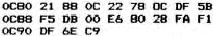
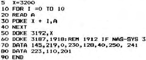

NAS-DOS owners are catered for by the utilities included on
the utilities disc.
To enable the computer to recognise the handshake signal
when using printers requiring this, it is necessary to enter the
following routine in to a suitable memory location 0C8O using
the NAS-SYS monitor, or the equivalent POKE’s from BASIC:

To access the printer from NAS-SYS, first enable this
routine by typing EC80 and then use the U command.
In BASIC the routine can be treated as follows (located at
X, where X=3200 for location 0C80 hex )

In NAS-PEN the routine should be entered and enabled using
NAS-SYS; NASPEN should be cold started and then exited, and
location 101D modified using the command M101E DF 75. If the
NAS-PEN file is saved this modified printer vector is also
saved, although it is still necessary to enter the code and
initialise it.
NAS-DOS users are provided with the utility program UTS
which is loaded at the top of memory and allows printer output
to a self-contained routine of the type described above.
3.3 Parallel printers with Centronics interface
A suitable driver is included in the UTS file an the NAS-DOS
utilities disc. The coding for a suitable routine is attached.
The routine is used as the User output routine under NAS-SYS in
exactly the same way as described for the serial printer with
handshake.
In NAS-SYS the routine should be entered using the M
command, and enabled by the EC9B command.
From BASIC the procedure is as described above, except that
the range of the FOR loop should be 0 TO 50 and the DATA
statements should be as follows: